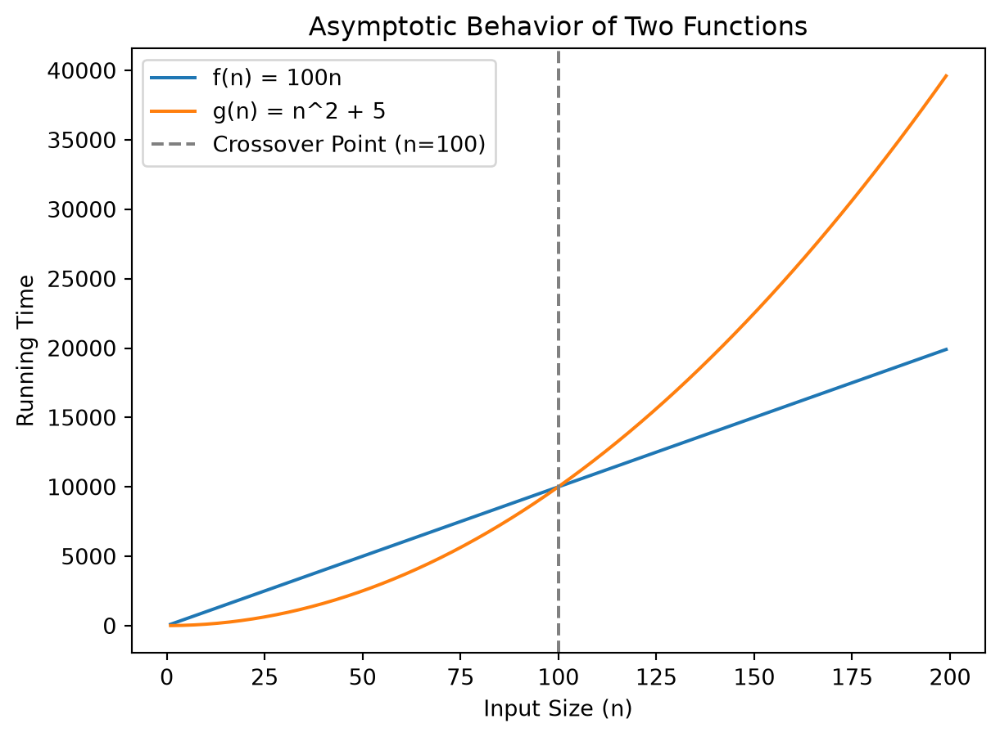

Foundations of Computational Algorithms and Computational Complexity
Introduction to computational algorithms and computational complexity, exploring the fundamental concepts but with the viewpoint of a data scientist.
Published
September 6, 2026
Introduction to Algorithms and Computational Problems
Definitions and Terminology
NoteDefinition: Algorithm
An algorithm is a finite, well-defined sequence of computational steps or procedures that takes some value, or set of values, as input and produces some value, or set of values, as output.
Informally, it represents the core logical “idea” behind any reasonable computer program, formulated in a language- and machine-independent way. An algorithm is said to solve a computational problem if it correclty maps every valid input instance to the correct output.
A distinction exists between a computational problem and an instance of that problem:
Computational Problem: A general description of an input/output relationship, specifying what properties the input must satisfy and what properties the output must have.
Instance of a Problem: A specific set of inputs (satisfying all constraints of the problem statement) needed to compute a solution.
TipExample: Sorting Problem
Sorting Problem: Given a list of numbers, the task is to arrange them in ascending order.
Input: A sequence of \(n\) numbers \(\langle a_1, a_2, \dots, a_n \rangle\).
Output: A permutation (reordering) \(\langle a_1', a_2', \dots, a_n' \rangle\) of the input sequence such that \(a_1' \leq a_2' \leq \dots \leq a_n'\).
Instance: The sequence \(\langle 3, 1, 4, 1, 5, 9 \rangle\) is an instance of the sorting problem, which a correct sorting algorithm will transform into the output sequence \(\langle 1, 1, 3, 4, 5, 9 \rangle\).
Properties of a Well-Defined Algorithm
To be considered well-defined and practically useful, an algorithm must meet several rigorous criteria:
Finiteness: It must terminate after a finite number of steps on any valid input instance.
Precision: Every computational step must be uniquely and unambiguously specified.
Correctness: It must guarantee the optimal or desired answer over all possible inputs, rather than just “usually” working.
Measuring Performance and Complexity: Empirical vs. Theoretical Analysis
The concept of efficiency
Algorithm efficiency describes the relationship between the size of a problem \((n)\) and the computational resources required by an algorithm to solve it. The primary resources of concern are Time Complexity (how execution time or computational steps grow with input size) and Space Complexity (how memmory requirements scale with input size). Although other physical resources such as disk I/O, network communication bandwidth, and energy consumption can be relevant in specific contexts, execution time and memory remain our primary analytical focus because they strongly dictate an application’s scalability.
Performance (Empirical) vs. Complexity (Theoretical)
There are two complementary ways of evaluating algorithm efficiency: empirical performance analysis and theoretical complexity analysis.
Dimension
Empirical Performance Analysis
Theoretical Complexity Analysis
Primary Question
“What resources were actually used by this implementation?”
“How do the resource requirements scale abstractly as a function of \(n\)?”
Methodology
Measured by running compiled/interpreted code on actual physical hardware under specific conditions.
Mathematically modeled by counting primitive operational steps as a function of input size \(n\).
Hardware Dependence
Deeply dependent on the physical machine, operating system, cache hierachy, compiler, and language.
Machine-independent; abstracts away hardware details to evaluate the core algorithm.
To facilitate machine-independent analysis, computer scientists evaluate algorithms on a hypothetical computer called the Random-Access Machine (RAM) model of computation. The RAM model assumes a single-processor computer where instructions are executed strictly sequentially with no concurrency. Under this model:
Every simple operation (such as addition \(+\), subtraction \(-\), multiplication \(*\), assignment \(=\), comparison if, or subroutine call) takes exactly one time step.
Every memory access (load, store, copy) takes exactly one time step.
Memory is assumed to be infinite, and the model ignores any performance differences between cache, RAM, or disk.
Complex operations (such as loops or nested subroutines) are not single steps; their cost is the sum of the simple operations that compose them.
We measure the run time of an algorithm by counting the number of RAM instructions executed on a given input instance.
Algorithm Performance Scenarios
An algorithm’s behavior can vary significantly between different inputs of the exact same size \(n\). To summarize this behavior, we define three standard functions over the set of all possible input instances:
Best-case, worst-case, and average-case complexity.
Best-case complexity: The minimum number of primitive operations required by the algorithm over any possible input instance of size \(n\). It represents the absolute fastest execution time for a given input size.
Worst-case complexity: The maximum number of primitive operations required by the algorithm over any possible input instance of size \(n\). It represents a guaranteed upper bound on execution time, ensuring that the algorithm will never run slower than this limit.
Average-case complexity: The expected number of steps executed by the algorithm over all possible input instances of size \(n\), often assuming a uniform probability distribution over the inputs. Average-case analysis is particularly vital for analyzing randomized algorithms.
Mathematical foundations of Asymptotic Analysis
Asymptotic Analysis Core Idea
NoteDefinition: Asymptotic Analysis
Asymptotic analysis is a methodology used to describe the efficiency of algorithms as the input size \(n\) grows arbitrarily large, approaching infinity \(n\to \infty\). In this limit, the exact step count \(T(n)\) becomes less critical than the dominant growth rate.
Asymptotic analysis suppresses constant factors and lower-order terms, because as \(n\) grows, their relative impact is entirely dwarfed by the highest-power term.
For small inputs (\(n<100\)), \(f(n)\) is larger. However, there is a crossover point (\(n_0=100\)), beyond which the quadratic term of \(g(n)\) dominates. As \(n\to \infty\), \(g(n)\) grows infinitely faster than \(f(n)\), making \(f(n)\) asymptotically superior because its resource footprint grows slower.
import numpy as npimport matplotlib.pyplot as pltn = np.arange(1, 200)f_n =100* ng_n = n**2+5plt.plot(n, f_n, label='f(n) = 100n')plt.plot(n, g_n, label='g(n) = n^2 + 5')# note the crossover pointplt.axvline(x=100, color='gray', linestyle='--', label='Crossover Point (n=100)')plt.xlabel('Input Size (n)')plt.ylabel('Running Time')plt.title('Asymptotic Behavior of Two Functions')plt.legend()plt.show()

Big O, Big Omega, and Big Theta
To formalize these limits, we utilize three primary mathematical notations. Let \(t(n):\mathbb N \to \mathbb R\) bbe the actual running time function of an algorithm, and let \(f(n)\) be an abstract bounding function.
Big-O Notation (Asymptotic Upper Bound)
NoteDefinition: Big-O Notation
We say that \(t(n)\) is Big-O of \(f(n)\), denoted as \(t(n) \in O(f(n))\), if and only if there exist positive real constants \(c\) and \(n_0\) such that for all \(n \geq n_0\): \[
t(n) \leq c \cdot f(n)
\]
Big-O notation visualized.
This notation characterizes an asymptotic upper bound: eventually, the actual growth rate \(t(n)\) grows no faster than a constant multiple of \(f(n)\). While it is true to state that a linear function \(5n+2\) is \(O(n^2)\) or \(O(n^3)\), we always strive to make the upper bound as tight as possible by reporting \(O(n)\).
TipExample
To prove that \(t(n) = 5n+2 \in O(n)\), we must find valid positive constants \(c\) and \(n_0\) such that \(5n+2\leq c\cdot n\). Selecting \(c=6\) and \(n_0=3\) yields: \[
5(3) + 2 = 17 \leq 6(3) = 18
\] thus, for all \(n \geq 3\), the inequality holds, confirming that \(t(n) \in O(n)\).
Big-Omega Notation (Asymptotic Lower Bound)
NoteDefinition: Big-Omega Notation
We say that \(t(n)\) is Big-Omega of \(f(n)\), denoted as \(t(n) \in \Omega(f(n))\), if and only if there exist positive real constants \(c\) and \(n_0\) such that for all \(n \geq n_0\): \[
t(n) \geq c \cdot f(n)
\]
Big-Omega notation visualized.
This notation characterizes an asymptotic lower bound: eventually, the algorithm’s execution rate will require at least a constant multiple of \(f(n)\) steps for all inputs larger than \(n_0\).
Big-Theta Notation (Asymptotically Tight Bound)
NoteDefinition: Big-Theta Notation
We say that \(t(n)\) is Big-Theta of \(f(n)\), denoted as \(t(n) \in \Theta(f(n))\), if and only if there exist positive real constants \(c_1\), \(c_2\), and \(n_0\) such that for all \(n \geq n_0\): \[
c_1 \cdot f(n) \leq t(n) \leq c_2 \cdot f(n)
\]
Big-Theta notation visualized.
This notation defines a tight bound, meaning \(t(n)\) and \(f(n)\) grow at the same asymptotic rate within constant scale factors.
The relationship between these three notations can be summarized as follows:
The standard dominance pecking order, including advanced and esoteric analysis function, is:
\[
n! \gg c^n \gg n^3 \gg n^2 \gg n^{1+\epsilon}\gg n\log n \gg \sqrt{n} \gg n \gg \log n \gg 1
\]
Detailed Profiles of Growth Classes
Constant Time: \(O(1)\)
Mathematical Concept: The resource footprint is completly independent of the parameter \(n\). The algorithm executes a fixed number of operations regardless of input size.
Operational Definition: \(T(n) = c\) steps.
Canonical Code Template:
def get_first_element(arr):return arr[0] # Accessing the first element is a constant-time operation
Common Real-World Examples:
Retrieving a risk profile in fraud detection using a known unique account ID.
Push and Pop operations on a stack structure.
Accessing or updating a single value in an array.
Logarithmic Time: \(O(\log n)\)
Mathematical Concept: Logarithms grow exceptionally slowly because they represent the inverse of exponential growth. Logarithmic time arises in any process where the problem space is repeatedly halved. The base of the logarithm does not affect the asymptotic class because changing bases only introduces a constant multiplier.
Operational Definition: \(T(n) = T(n/2) + O(1)\).
Canonical Code Template:
def binary_search_digits(n): count =0while n >0: n = n //2# repeated halving count +=1return count
Common Real-World Examples:
Searching for a name in a sorted database containing millions of records (Binary Search).
Insert and Find operations in a balanced Binary Search Tree (BST) with \(n\) nodes.
Linear Time: \(O(n)\)
Mathematical Concept: The computational time scales in direct, 1-to-1 proportion with the size of the input \(n\). Looking at every time in an input array a constant number of times yields linear complexity.
Operational Definition: \(T(n) = c\cdot n\).
Canonical Code Template:
def find_max_element(arr): max_val = arr[0]for element in arr: # traverse the list of size $n$ exactly onceif element > max_val: max_val = elementreturn max_val
Common Real-World Examples:
Sequential search in an unsorted list.
Fraud screening: checking every financial transaction once.
Superlinear / Log-linear Time: \(O(n\log n)\)
Mathematical Concept: This class typically characterizes divide-and-conquer strategies, where a problem of size \(n\) is divided into smaller subproblems, solved recursively, and recombined using linera-time overhead.
def merge_sort(arr):iflen(arr) <=1:return arr mid =len(arr) //2# divide the array into two halves left_half = merge_sort(arr[:mid]) # recursively sort the left half right_half = merge_sort(arr[mid:]) # recursively sort the right halfreturn merge(left_half, right_half)
Common Real-World Examples:
Merge Sort and Quick Sort algorithms.
Sorting candidate movie recommendations by relevance score.
Quadratic Time: \(O(n^2)\)
Mathematical Concept: Running time grows proportionally to the square of the input size \(n\). If input size increases by a factor of 10, computation steps increase by a factor of 100. It typically arises in algorithms utilizing doubly nested loops.
Operational Definition: \(T(n) = c\cdot n^2\).
Canonical Code Template:
def find_duplicates(arr): n =len(arr)for i inrange(n):for j inrange(i +1, n): # nested loop over the arrayif arr[i] == arr[j]:returnTruereturnFalse
Common Real-World Examples:
Document similarity matching: comparing every document in a corpus against every other document.
Elementary sorting techniques like Selection Sort and Insertion Sort.
Cubic Time: \(O(n^3)\)
Mathematical Concept: Enumerates all triples of items in an \(n\)-element universe, typically implemented via triply nested loops.
Operational Definition: \(T(n) = c\cdot n^3\).
Canonical Code Template:
def cubic_matrix_multiplication(A, B, n): C = [[0] * n for _ inrange(n)] # Initialize result matrixfor i inrange(n):for j inrange(n):for k inrange(n): # Triple nested loop C[i][j] += A[i][k] * B[k][j]return C
Common Real-World Examples:
Naive dense Matrix Multiplication.
Certain dynamic programming algorithms, such as the Floyd-Warshall algorithm for finding shortest paths in a weighted graph.
Exponential Time: \(O(a^n)\) for \(a>1\).
Mathematical Concept: The amount of computation steps grows by a constant factor \(a\) for every single increment of 1 in the input size \(n\). These algorithms quickly become completely impractical for inputs \(n\geq 40\).
Mathematical Concept: Computation scales with the factorial function, which grows faster than even standard exponentials. Generating or inspecting every permutation of \(n\) elements yields factorial complexity. It becomes computationally useless for \(n\geq 20\).
Operational Definition: \(T(n) = n \cdot T(n-1)\).
Canonical Code Template:
def generate_permutations(arr):iflen(arr) ==0:return [[]] # Base case: one permutation of an empty list permutations = []for i inrange(len(arr)):# Generate all permutations of the remaining elements remaining = arr[:i] + arr[i+1:]for p in generate_permutations(remaining): permutations.append([arr[i]] + p)return permutations
Common Real-World Examples:
Generating every possible ordering of \(n\) parts to verify structural priority (Topological Sort via exhaustive search).
Solving the Traveling Salesman Problem (TSP) using naive exhaustive permutation testing.
Advanced Complexity and Esoteric Growth Classes
Advanced algorithmic analysis occasionally encounters more specialized growth classes:
Inverse Ackermann’s Function: \(O(\alpha(n))\). The inverse of the rapidly growing Ackermann’s function. It represents the absolute slowest-growing non-constant complexity class. \(\alpha(n)\) is smaller than 5 for any conceivable input size \(n\) in our physical universe, yet mathematically it still approaches infinity as \(n\to \infty\). It classically found in the amortized analysis of the Union-Find data structure.
Double Logarithm: \(O(\log \log n)\). Grows even slower than \(\log n\). It describes processes like performing a binary search on a sorted array of only \(\log n\) items.
Sublinear Polynomials: \(O(\sqrt {n})\). These functions frequently arise when dividing spatial databases or multidimensional grids containing \(n\) points into root-node partitions.
Epsilon Polynomials: \(O(n^{1+\epsilon})\) for any \(\epsilon>0\). Represents a class of functions slightly larger than linear but strictly better than quadratic. It appears when a parameter can be adjusted to balance constant overhead and power growth.
Methodology of Algorithmic Analysis
ADT vs. Data Structure vs. Concrete Data Type
To write efficient code, we must understand the logical layers of data organization.
┌─────────────────────────────────────────────────────────┐
│ 1. Abstract Data Type (ADT) │
│ - Specifies values and supported operations │
│ - "What does the structure do?" (No implementation) │
└────────────────────────────┬────────────────────────────┘
▼
┌─────────────────────────────────────────────────────────┐
│ 2. Data Structure │
│ - Specifies physical arrangement and algorithm │
│ - "How are the operations carried out?" │
└────────────────────────────┬────────────────────────────┘
▼
┌─────────────────────────────────────────────────────────┐
│ 3. Concrete Data Type │
│ - Language-specific physical implementation │
│ - Python list, User-defined class │
└─────────────────────────────────────────────────────────┘
Abstract Data Type (ADT): A pure mathematical specification of a collection of data values and the operations supported, completely devoid of implementation detail. E.g., the List ADT specifies a sequence of values with operations like insert, delete, and get, but does not dictate how these operations are implemented.
Data Structure: A physical scheme to store and organize data in memory to faciliate efficient access and modifications. E.g., a Linked List or Dynamic Array representing two distinct implementation strategies for the List ADT.
Concrete Data Type: A specific implementation of a data structure in a programming language. E.g., a Python list or a C++ std::vector are concrete data types that implement the List ADT using dynamic arrays.
Impact of Data Organization on Cost: Organizing the same data in different structures alters operation complexity. Consider the membership testing operation (x in collection) at scale:
Python list (Dynamic Array data structure): Requires \(O(n)\) linear traversal because elements are stored consecutively in memory, necessitating sequential checking.
Python set (Hash Table data structure): Requires \(O(1)\) constant time because the hashing function maps keys directly to specific memory addresses, bypassing traversal.
Case Study 1: Selection Sort Analysis
The Selection Sort algorithm repeatedly identifies the minimum remaining unsorted element and exchanges it with the element at the boundary of the sorted partition.
Selection Sort Python Implementation:
def selection_sort(arr): n =len(arr)for i inrange(n): min_idx = ifor j inrange(i +1, n):if arr[j] < arr[min_idx]: min_idx = j arr[i], arr[min_idx] = arr[min_idx], arr[i] # Swap the found minimum element with the first unsorted element
To compute the exact step complexity \(T(n)\) under the RAM model, we count the number of comprarisons executed in the inner loop:
When \(i=0\), the inner loop index \(j\) runs from 1 to \(n-1\) (\(n-1\) steps).
When \(i=1\), the inner loop index \(j\) runs from 2 to \(n-1\) (\(n-2\) steps).
…
In general, the \(i\)-th iteration of the outer loop executes exactly \(n-i-1\) steps of the inner loop.
Applying asymptotic simplification rules (dropping constant factors and lower-order terms):
\[
T(n) \in \Theta(n^2) (\text{quadratic time complexity})
\]
Case Study 2: Matrix Multiplication Analysis
Nested loops are a common source of polynomial time complexity. Consider the naive algorithm for multiplying two \(n \times n\) matrices \(A\) and \(B\) to produce a result matrix \(C\).
Naive Matrix Multiplication Python Implementation
def matrix_multiply(A, B, x, y, z):""" A is of size x * y, B is of size y * z, and C will be of size x * z. """ C = [[0] * z for _ inrange(x)] # Initialize result matrixfor i inrange(x):for j inrange(z):for k inrange(y): C[i][j] += A[i][k] * B[k][j]return C
The total number of multiplication steps \(M(x, y, z)\) is represented by three nested summations:
\[
M(x, y, z) = \sum_{i=0}^{x-1} \sum_{j=0}^{z-1} \sum_{k=0}^{y-1} 1 = x \cdot z \cdot y
\]
Evaluating the nested summations from the innermost outward: 1. The innermost sum of 1 from 1 to \(y\) is simply \(y\): \[
\sum_{k=0}^{y-1} 1 = y
\] 2. The sum of the constant \(y\) from 1 to \(z\) yields \(y \cdot z\): \[
\sum_{j=0}^{z-1} y = y \cdot z
\] 3. Finally, summing \(y \cdot z\) from 1 to \(x\) gives \(x \cdot y \cdot z\): \[
\sum_{i=0}^{x-1} y \cdot z = x \cdot y \cdot z
\]
If we consider the common case of multiplying two square matrices of dimension \(n\times n\) (where \(x=y=z=n\)), the complexity simplifies to:
\[
M(n) = n^3 \in \Theta(n^3) (\text{cubic time complexity})
\]
Case Study 3: Merge Sort & Divide-and-Conquer Recurrences
Divide-and-conquer algorithms operate by recursively calling themselves on smaller instances of a problem. The running time of such recursive structures is formally modeled using recurrence equation.
A recurrence equation describes the overall running time \(T(n)\) of a problem of size \(n\) in terms of the running time of smaller inputs. For a standard divide-and-conquer algorithm that divides a problem into \(a\) subproblems, each of size \(1/b\) of the original, with dividing cost \(D(n)\) and combining cost \(C(n)\), the recurrence relation is:
General Recurrence Equation for Divide-and-Conquer
\[
T(n) = \cases{
\Theta(1), & if $n \leq c$\\
a T(n/b) + D(n) + C(n), & otherwise
}
\]
For Merge Sort, we assume \(n\) is an exact power of 2 for simplicity. The algorithm divides the array into \(a=2\) subproblems, each of size have exactly \(n/b = n/2\).
Dividing Cost\(D(n)\): Finding the middle of the array takes constant time, \(D(n) = \Theta(1)\).
Combining Cost\(C(n)\): Merging two sorted subarrays of total size \(n\) requires linear time, \(C(n) = \Theta(n)\).
This yields the classical recursive equation:
\[
T(n) = 2 T(n/2) + \Theta(n)
\]
To solve this recurrence, we construct a recursion tree:
Level 0: cn Total cost: cn
/ \
Level 1: cn/2 cn/2 Total cost: 2*(cn/2) = cn
/ \ / \
Level 2: cn/4 cn/4 cn/4 cn/4 Total cost: 4*(cn/4) = cn
/ \ / \ / \ / \
...
Level log n: c c c c c c c Total cost: n*c = cn
Height of Tree: The input size is repeatedly halved until it reaches size 1. The number of divisions required is \(\log n\), resulting in \(\log n + 1\) total levels in the recursion tree.
Cost per level: The \(i\)-th level below the top has \(2^i\) nodes, each contributing a computational cost of \(c \cdot n / 2^i\). Thus, the total cost at level \(i\) is:
\[
2^i \cdot c \cdot \frac{n}{2^i} = c \cdot n
\]
Summing Level Costs: Summing the uniform cost of \(cn\) across all \(\log n + 1\) levels yields:
\[
T(n) = c\cdot n \cdot (\log n + 1) = c \cdot n \log n + c \cdot n
\]
Dropping lower-order terms and constant coefficients, we prove:
\[
T(n) \in \Theta(n \log n) (\text{log-linear time complexity})
\]
Standard Mathematical Summation Formulas
When performing complexity analysis on loop structures, the following mathematical closed-form summations are frequently applied:
Arithmetic Progression (Sum of Linear Range)
The sum of the first \(n\) natural numbers:
\[
\sum_{i=1}^{n} i = 1+ 2+ \dots + n = \frac{n(n+1)}{2} \in \Theta(n^2)
\]
The asymptotic behavior depends on the base \(a\): - If \(\mid a \mid < 1\), the sum converges to a constant as \(n \to \infty\):
\[
\sum_{i=0}^{\infty} a^i = \frac{1}{1-a} \leq C \in \Theta(1).
\] This is the “free lunch” of algorithm analysis, showing that the sum of an infinite progression can be bounded by a constant. - If \(a=1\), the sum grows linearly with \(n\): \[
\sum_{i=0}^{n} 1^i = n+1 \in \Theta(n)
\] - If \(a>1\), the sum grows exponentially with \(n\): \[
\sum_{i=0}^{n} a^i = \frac{a^{n+1}-1}{a-1} \in \Theta(a^n)
\]
Harmonic Series
The sum of reciprocal integers, which characterizes search patterns in randomized algorithms: